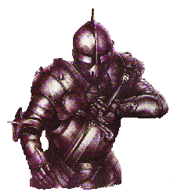

Per costruire le corazze occorre la competenza Armorer.
Un personaggio con la competenza Armorer
conosce il lavoro di fabbro (blacksmith) abbastanza bene per poter forgiare le
armature di metallo e lavorarle, inoltre ha abbastanza conoscenze nel lavorare
le pelli e il cuoio (leatherworking) da poter utilizzare questi tessuti per fare
delle armature con questi materiali e nel cucire tessuti (tailor) per fare corazze
di tessuto. Queste sue conoscenze, però, gli permettono unicamente di costruire corazze.
Per i vari tipi di corazza occorrono però diverse
materie prime e l’officina da utilizzare
per la loro costruzione.
Supponendo che il personaggio abbia a disposizione
tutti i materiali e la struttura che, saranno poi descritte, le regole basi di
costruzione sono le seguenti :
Ogni armatura richiede un tempo medio di costruzione
in giorni completi di lavoro e un determinato ammontare in materiali :
|
Modello
|
Giorni
di lavoro |
Materiale
richiesto |
|
Vestiti
Imbottiti |
4 |
Tessuti
per 1 g.p. |
|
Cuoio
|
5 |
Cuoio
per 2 g.p. |
|
Cuoio
Rinforzata |
|
Cuoio
per 4 g.p. e metalli dolci per 4 g.p. |
|
Pelli
bollite |
10 |
Pelli
di animali molto resistenti per 5 gp. |
|
Cotta
ad Anelli |
15
|
Cuoio
per 2 gp. e ferro per 15 gp. |
|
Cotta
a Scaglie |
16 |
Cuoio
per 2 gp. e ferro per 25 gp. |
|
Cotta a Segmenti |
25 |
Cuoio
per 5 gp. e ferro per 20 gp. |
|
Maglie
di Ferro |
18 |
Cuoio
per 2 gp. e ferro per 28 gp. |
|
Cotta
a Bande |
30 |
Cuoio
per 5 gp. e ferro per 45 gp. |
|
Piastre
di Bronzo |
40 |
Cuoio
per 5 gp. e bronzo per 65 gp. |
|
Corazza
di Piastre |
50 |
Cuoio
per 5 gp. e acciaio per 95 gp. |
|
Piastre da guerra |
90 |
Cuoio
per 10 gp. e acciaio per 490 gp. |
|
Piastre
completa * |
120 |
Cuoio
per 5 gp. e acciaio per 1000 / 1250 / 1500 / 1750 gp. |
* Queste sono armature fatte su misura per cui occorre che il compratore resti il 20 % dei giorni a completa disposizione dell’armaiolo per provare e calibrare la corazza.
Al termine del periodo di lavoro il personaggio dovrà effettuare una prova sull’abilità ed, a seconda di se e quanto riesce o fallisce in questa prova, si otterranno i seguenti risultati:
| Prova
fallita di 5 o + punti |
La corazza è da buttare ed il fabbro perde tempo e materiali |
| Prova
fallita da 1 a 4 punti |
La corazza
è di scadente fattura (-1 punto corazza per punto protetto; +10% del peso; -30 % del valore) |
| Prova
riuscita |
La corazza è normale |
| Prova
riuscita da 10 a 14 punti |
La corazza è di buona fattura (-10% al peso; +20% al valore) |
| Prova
riuscita di 15 o + punti |
La corazza
è di eccellente fattura (-20% al peso; + 1 punto corazza per punto protetto; +50 % del valore) |
La prova subirà modifiche a seconda della corazza che si vuole costruire. Inoltre vi sono delle competenze complementari che danno un bonus di +2 al check qualora il corazziere le conosca sempre che riesca in una prova su tali competenze prima di effettuare la prova nel costruire la corazza. Tali competenze complementari si utilizzano anche per stabilire che tipo di officina è richiesta per costruire quel determinato tipo di corazze:
|
Modello |
Modifica
al check |
Competenza |
|
Vestiti
Imbottiti |
+3 |
Seamstress/Tailor |
|
Cuoio |
+2 |
Leatherworking |
|
Cuoio Rinforzata |
+2 |
Leatherworking |
|
Pelli
Bollite |
+3 |
Leatherworking |
|
Cotta ad Anelli |
+1 |
Blacksmithing |
|
Cotta a Scaglie |
0 |
Blacksmithing |
|
Cotta a Segmenti |
-1 |
Blacksmithing |
|
Maglie
di Ferro |
+1 |
Blacksmithing |
|
Cotta a Bande |
-1 |
Blacksmithing |
|
Piastre di Bronzo |
-2 |
Blacksmithing |
|
Corazza
di Piastre |
-3
|
Blacksmithing |
|
Piastre
da guerra * |
-4 |
Blacksmithing |
|
Piastre completa * |
-5 |
Blacksmithing |
Allungare i tempi di costruzione. L’armaiolo può impiegare più tempo per costruire una corazza con maggiore precisione. Quando usa questa tecnica però otterrà un bonus di + 1 al check, ma impiegherà il 15 % del tempo di costruzione in giorni (calcolato per eccesso).
Abbreviare i tempi di costruzione. L’armaiolo può ridurre i tempi di costruzione, lavorando male ma in fretta. Quando usa questa tecnica però otterrà un malus di – 2 al check, ma risparmierà il 20 % del tempo di costruzione in giorni (calcolato per eccesso).

Le strutture
per costruire le corazze sono :
Per conoscere quali strutture sono necessarie per costruire un determinato tipo di corazza occorre fare riferimento alla competenza secondaria richiesta.
Quando è complementare blacksmithing occorre operare in una fucina e possedere gli attrezzi da fabbro come per costruire le armi di metallo e acciaio.

Per quelle in cui sono complementari Leatherworking
o Seamstress/Tailor occorrono degli strumenti particolari e una
bottega per lavorare il cuoio o da tessitore su cui pagare la manutenzione.
La
bottega deve contenere almeno i seguenti arnesi di lavoro per permettere a una
persona di lavorare :
KIT
da Cuoiaio o Tessitore (Costo 30 gp., Peso 15 lbs.)
1
Martello
1
Sega a mano dritta e 1 Trapezoidale (Saracco )
1
Set di aghi di varie dimensioni
3
Rotoli di filo di varia resistenza
1
Trapano a mano con varie punte
1
Tagliere in legno per tessuti
2
Coltelli speciali taglia tessuti
2
Metri di legno rigido per le misure
Il
costo medio di questo kit di falegname è di 30 corone e su queste si paga la
manutenzione da arnesi industriali (0.5 corone al mese), per ogni mese che non
si paga e si utilizza il kit si ottiene un malus al check di – 1.
Ogni
kit successivo al primo permette di lavorare a 2 altre persone. Per cui mentre
con 1 kit può lavorare una sola persona con tre kit possono lavorare 5 persone.
Servirà
ovviamente un luogo ove lavorare con un tavolo da lavoro le sedie ecc… ecc…
Per costruire corazze che siano di diversa classe di
peso occorre modificare il tempo il costo del materiale e il check in base a
questa tabella :
|
Classe
di Peso |
Modifica
al materiale (per eccesso) |
Modifica
ai giorni lavoro (per eccesso) |
Modifica
al check |
|
Leggera |
-
10 % |
+
10 % |
-
1 penalità |
|
Standard |
Nessuna |
Nessuna |
Nessuna |
|
Pesante |
+
20 % |
+
20 % |
-
2 penalità |
Per questi prodotti si seguono le stesse regole che
per le armature e le tavole sono le seguenti, la compentenza complementare è
per tutti blacksmith,
tranne che per il leather helm che è leatherworking.
|
Modello |
Modifica
AC |
Costo |
Peso |
Punti
corazza |
|
Scudo
da Corpo |
-1(-2) tre attacchi frontali |
10
g.p |
15 |
20 |
|
Scudo
Medio |
-1 tre
attacchi frontali |
7
g.p. |
10 |
15 |
|
Scudo
Piccolo |
-1 due
attacchi frontali |
3
g.p. |
5 |
12 |
|
Scudo
Rotella |
-1 un
attacco frontale |
1
g.p. |
3 |
8 |
|
Modello
|
Giorni di lavoro |
Materiale richiesto |
|
Scudo
da Corpo |
10 |
Cuoio
per 1 gp. e ferro per 4 gp. |
|
Scudo
Medio |
7 |
Cuoio
per 1 gp. e ferro per 2 gp. |
|
Scudo
Piccolo |
5 |
Cuoio
per 1 gp. e ferro per 1 gp. |
|
Scudo
Rotella |
3 |
Ferro
per 1 gp. |
Uno scudo preparato con punte o lame ottiene + 1 ai danni per questa operazione ed ha un valore di mercato ed un peso pari al 150% del suo valore normale. Si noti che il bonus ai danni si considera come un bonus dovuto alla fattura dello scudo e non come parte del dado dell'arma.
|
Modello
|
Giorni di lavoro |
Materiale richiesto |
|
Elmi di cuoio
|
|
Cuoio per 2 gp.
|
|
Collare di maglia |
|
Cuoio per 1 gp. e ferro per 4 gp. |
|
Elmi di metallo |
|
Cuoio per 1 gp. e ferro per 7 gp. |
|
Elmo completo* |
|
Cuoio per 2 gp. e ferro per 20 gp. |
Per riparare le corazze occorre avere le stesse
competenze e gli stessi strumenti che sono necessari per costruirle. Il
corazziere dovrà impiegare tempo e denaro nel riparare le corazze come indicato.
Il costo per riparare un punto corazza è calcolato addizionando le seguenti
spese:
* costo dei materiali: pari al 50% del costo della corazza
nuova diviso ammontare di suoi punti corazza massimi
* 0,5 g.p. al giorno spese del corazziere (deve possedere Armorer)
* 1 g.p. al giorno per le spese della fucina (non
applicabile alle corazze di tessuti)
Il
tempo richiesto per riparare un punto corazza vari a seconda del tipo di corazza
utilizzata :
Le corazze di tessuti : fino a 3 punti corazza al giorno
Le corazze metalliche snodate : fino a 2 punti corazza al giorno
Le corazze metalliche rigide : 1 punto corazza al giorno
Le
corazze metalliche rigide pesanti :
2.5 giorni a punto corazza
Gli scudi di tutte le tipologie :
1 punto corazza al giorno
Per riparare una corazza non è necessario effettuare alcun tiro sulla competenza.
Però ogni volta che la corazza viene aggiustata si danneggia leggermente
perdendo definitivamente punti corazza. Una
corazza perderà ogni volta che viene riparata tanti punti corazza quanti sono i
punti di classe armatura che ha perso a causa dei danni subiti,
se quindi non ha perso seppure danneggiata alcun punto di classe armatura sarà
riparata senza danni permanenti. Per gli scudi questi
perdono un punto corazza definitivo ogni volta che sono sottoposti a riparazione,
due punti se hanno perso il 50 % o più dei punti corazza che gli rimangono.
Se una corazza o uno scudo perde tutti i suoi punti
corazza sarà distrutta e non sarà possibile più riparala/o.